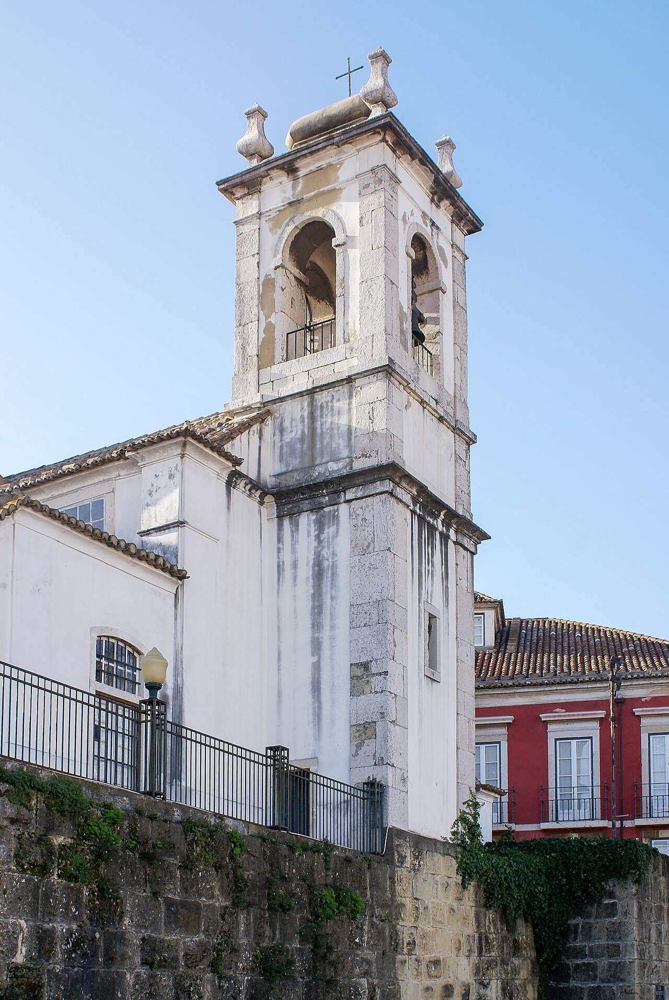
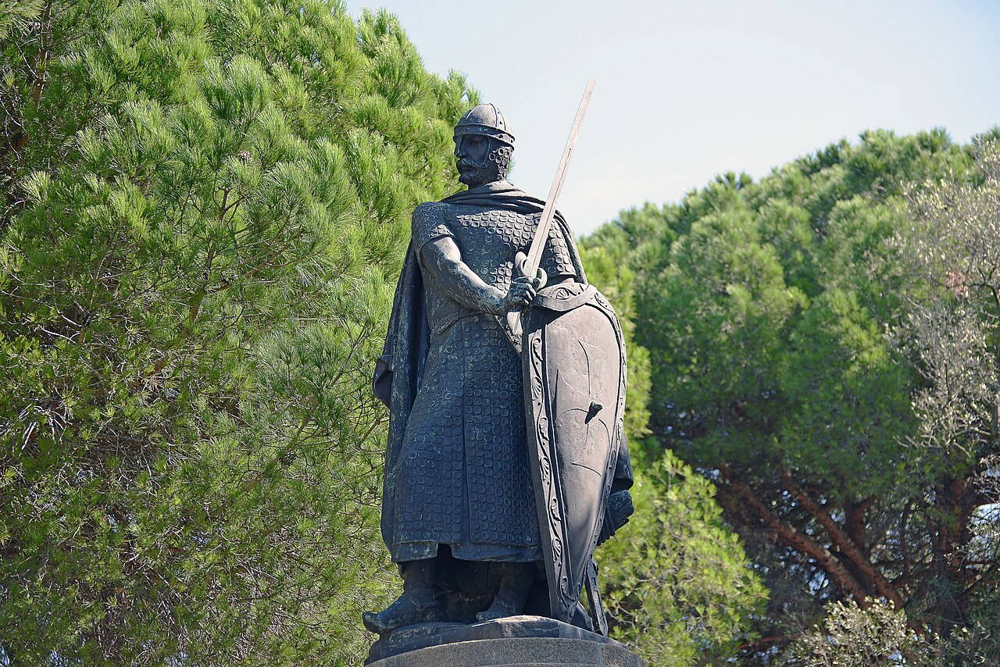
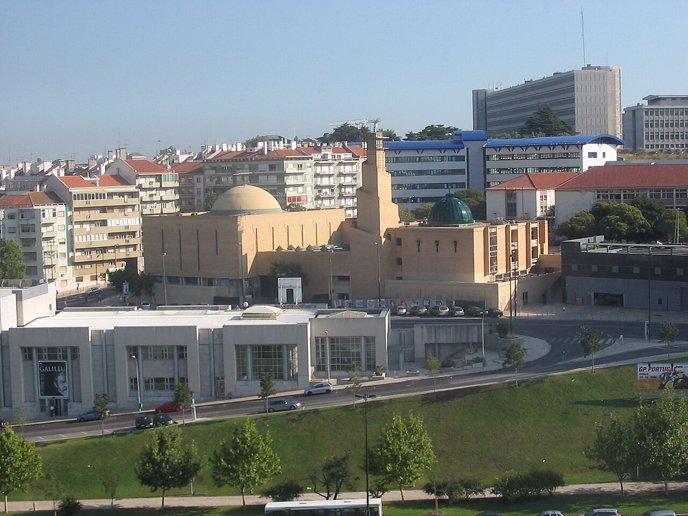
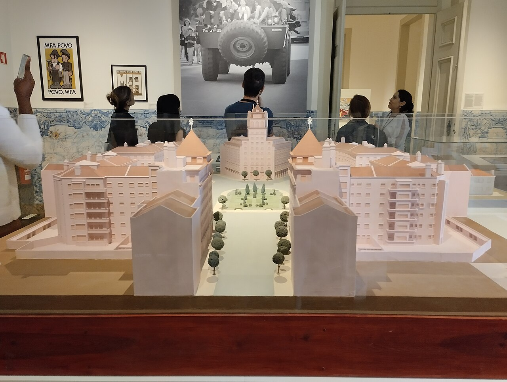

Исторические и справочные гербы


Lisbon
Путеводитель. Объектов в этом выпуске: 36.
OTIUM — практика нарочитого досуга. В античном смысле otium — не побег от работы, а время, когда внимание возвращается к памяти, пейзажу и мысли — без прикладного дедлайна.
Мы выстраиваем маршруты для неспешного присутствия, а не для чек-листа достопримечательностей: важно быть в месте, а не «потреблять» виды.
OTIUM — не туроператор. Это приглашение пройтись, остановиться и оставить маршрут незавершённым, если свет на фасаде заслуживает ещё минуты.
Исторические и справочные гербы
Путеводитель. Объектов в этом выпуске: 36.
Лиссабон — столица Португалии, порт на Атлантике у устья Тежу.
Финикийские и римские корни, эпоха Великих географических открытий и землетрясение 1755 года сформировали Помбалинский центр и трамваи на крутых улицах. Фаду, азулежу и колониальное наследие — часть идентичности города.
Землетрясение и Помбал перестроили центр; колониальное прошлое сменилось революцией гвоздик 1974 года и вступлением в ЕС. Лиссабон развивает технологии и туризм, сохраняя фаду, трамваи и память о мореплавании.

25 de Abril Bridge — landmark in Lisbon.

Belém Palace — landmark in Lisbon.

Riverside bastion and ceremonial gateway to Lisbon's harbour, decorated with Manueline rope motifs and royal shields.
Built from lioz limestone as part of King Manuel I's coastal defence and prestige programme.
Icon of Portugal's Age of Discovery imagery.

Cais das Colunas — landmark in Lisbon.

Calouste Gulbenkian Museum — landmark in Lisbon.

Campo Pequeno bullring — landmark in Lisbon.

Carmo Convent ruins — landmark in Lisbon.
1755 shockwave stripped vaults; romantic ruin aesthetic drew 19th-century visitors.
Physical reminder of Lisbon's seismic vulnerability.

Carmo Convent ruins — landmark in Lisbon.
Church, Lisbon (DSC03375).jpg

Church, Lisbon (DSC03375).jpg — landmark in Lisbon.

Estrela Basilica — landmark in Lisbon.

Jerónimos Monastery — landmark in Lisbon.

Jerónimos Monastery — landmark in Lisbon.

Hieronymite monastery funded by spice-trade wealth, housing Vasco da Gama's tomb and a filigree stone cloister.
Linked to the return of da Gama's first India voyage; the complex became a state pantheon for navigators.
High point of Portuguese Late Gothic carving.
Lisboa May 2013-1.jpg
Lisboa May 2013-1.jpg — landmark in Lisbon.
Lisbon 2015 10 15 1200 (23269657414).jpg

Lisbon 2015 10 15 1200 (23269657414).jpg — landmark in Lisbon.

Lisbon Cathedral — landmark in Lisbon.
Lisbon Mosque.jpg

Lisbon Mosque.jpg — landmark in Lisbon.

Street art, design shops, and rooftop bars inside a former textile mill yard under the bridge.
Lisbon's post-industrial waterfront strip attracted creatives before major hotel chains.
Alternative retail spine west of Belém.

Riverfront contemporary art and technology shows with roof walks toward Ponte 25 de Abril.
EPAL power station neighbour negotiated shared public esplanades.
Belém's modern wing beyond the monastery axis.

Miradouro da Graça — landmark in Lisbon.

Miradouro da Senhora do Monte — landmark in Lisbon.
Museum Lisbon 001.jpg

Museum Lisbon 001.jpg — landmark in Lisbon.

National Pantheon — landmark in Lisbon.
Unfinished church became a secular pantheon for national heroes.
360° roof views reward the climb from the tile quarter.

National Tile Museum — landmark in Lisbon.
Madre de Deus church absorbed into a national azulejo collection.
Best single-site survey of Portuguese tile painting.

Oceanário de Lisboa — landmark in Lisbon.

The Monument of the Discoveries (Portuguese: Padrão dos Descobrimentos, Portuguese pronunciation: [pɐˈðɾɐ̃w duʒ ðɨʃkuβɾiˈmẽtuʃ]) is a monument on the northern bank of the Tagus River estuary, in the civil parish of Santa Maria de Belém, Lisbon. Located along the river where ships departed to explore and trade with India and the Orient, the monument celebrates the Portuguese Age of Discovery (or "Age of Exploration") during the 15th and 16th centuries.
Palácio da Bemposta.jpg

Palácio da Bemposta.jpg — landmark in Lisbon.

Edward VII Park (Portuguese: Parque Eduardo VII) is a public park in Lisbon, Portugal. The park occupies an area of 26 hectares (64 acres) to the north of Avenida da Liberdade and Marquis of Pombal Square in Lisbon's city center. The park is named for King Edward VII of the United Kingdom, who visited Portugal in 1903 to strengthen relations between the two countries and reaffirm the Anglo-Portuguese Alliance.

Yellow arcaded square opening to the Tagus, framed by government wings and the triumphal Rua Augusta Arch.
Replaced the royal palace destroyed in the 1755 earthquake as the city's ceremonial river gate.
Default festival ground and tourist orientation hub.

Praça do Município — landmark in Lisbon.

Central plaza with baroque fountains, theatre, and station portal feeding Sintra trains.
Inquisition autos-da-fé gave way to civic festivals and café culture.
Default meeting point between Baixa and nightlife hills.

Vertical iron link between lower Baixa grid and Carmo terrace viewpoints, still using original carriages on busy days.
Steam originally powered the lift; electrification integrated it into Carris urban transport branding.
Industrial heritage selfie spot between grid and hill neighbourhoods.

Hilltop fortifications with ramparts overlooking terracotta roofs, cruise ships on the Tagus, and peacocks in gardens.
Moorish citadel became royal palace; today's ruins are largely medieval and restored 20th-century fabric.
The compass rose for understanding Lisbon's seven hills layout.

São Vicente de Fora — landmark in Lisbon.

Wood-and-brass cars squeal through Alfama curves past miradouros and cathedral approaches.
Electrified lines replaced funiculars on some hills while keeping narrow gauge.
Moving postcard through the steepest historic quarters.

Águas Livres Aqueduct — historic aqueduct in Lisbon, Portugal.